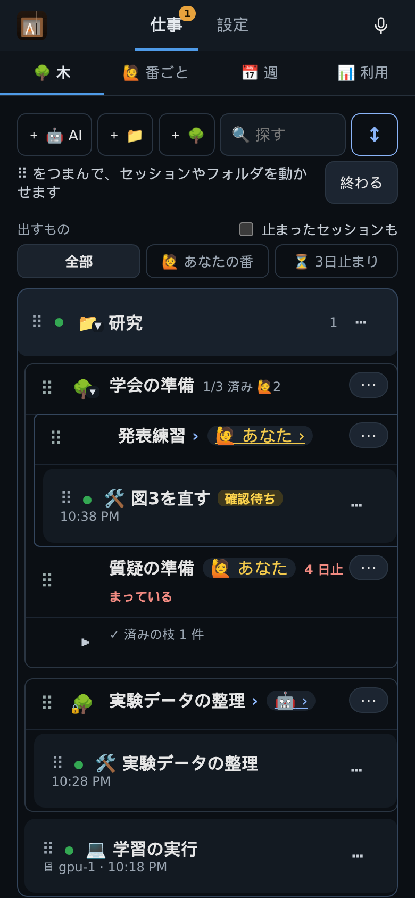
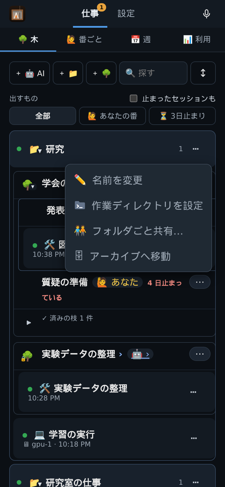
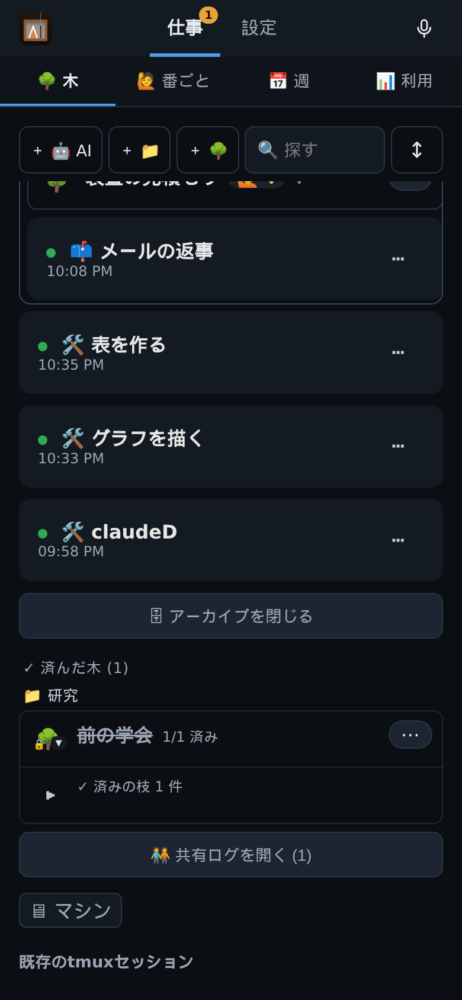
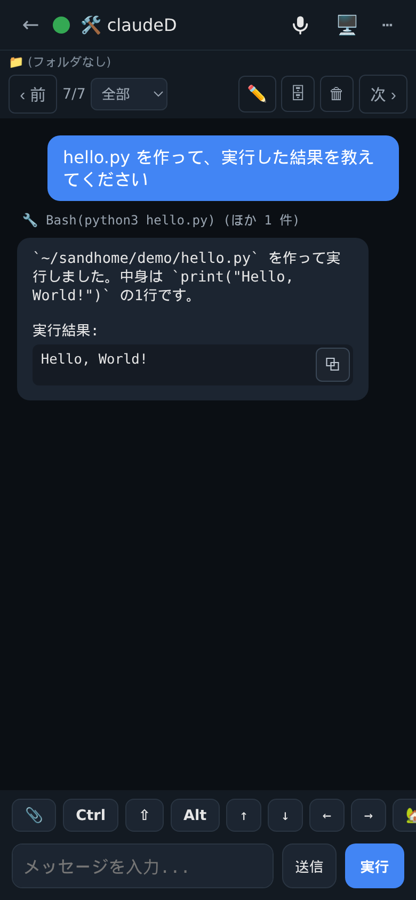
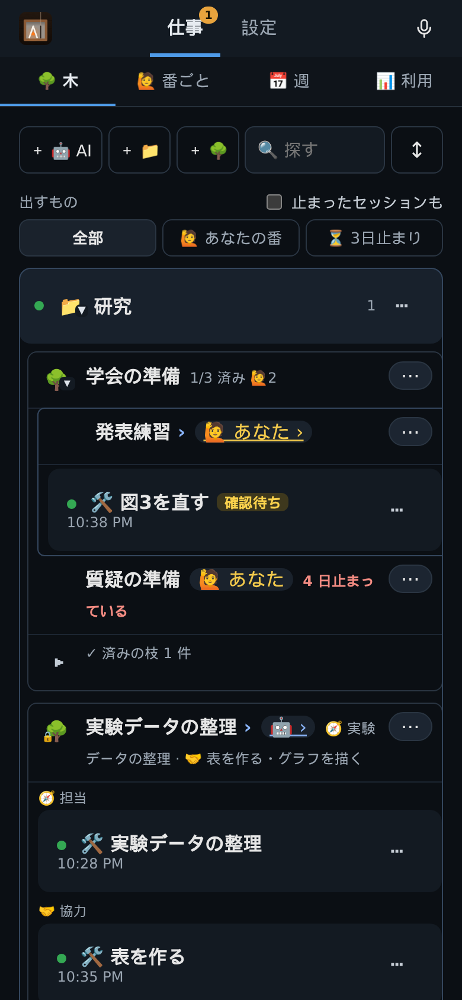
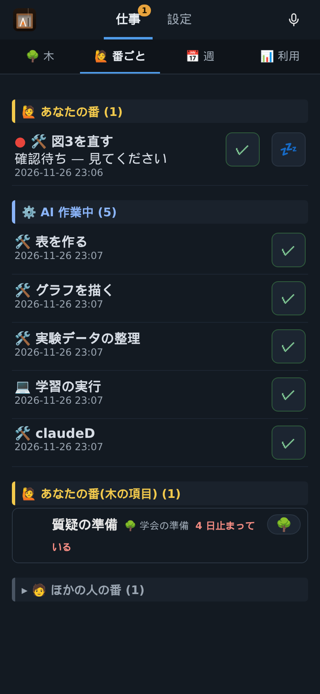
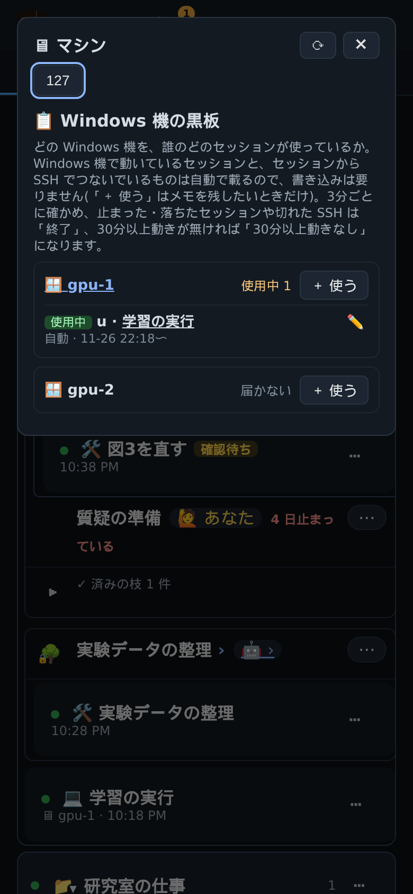

AI座 チュートリアル 発展編
基本編の続きです。セッションが増えてきたときの整理(フォルダ・仕事の木・巡回・番ごと)、他のセッションとの連携、devbox の外(mailbox・ホスト・ルート)、他のマシンの使い方を説明します。
1. フォルダと仕事の木で整理する
仕事の 🌳 木では、セッションをフォルダにまとめ、さらに仕事の木(やることを枝分けして書いたもの、3章)の項目の下に置けます。フォルダの中にフォルダを作ることもでき、段数に制限はありません。

- 選ぶ・開く: フォルダの行を1回押すと選び(枠が青く光る)、選んだ行をもう一度押すと開く・閉じる。📁 の右下の ▶/▼ を押すと、選ばずにすぐ開閉します。行の数字は中のセッションの数です。開いたフォルダは、中ごと枠で囲まれます。
- 作る: 上の段の「＋ 📁」を押すと、上の段のすぐ下に名前の欄が開きます。名前を書いて「作る」(または Enter)。フォルダを選んでいれば、その中に作ります。
- 入れる・動かす: 上の段の ↕ を押すと、各行の左に ⠿ が出ます。⠿ をつかんで、フォルダの行の上で離すとその中に入ります。行と行の間で離すと、そこへ並べ替えます。フォルダごと、仕事の木ごと別のフォルダに入れることもできます。終わったらもう一度 ↕。
- セッションを仕事の木の項目へ: セッションの ⠿ を木の項目の上で離すと、その項目の下に入ります(項目とセッションが結びつく)。項目が済むと、セッションはフォルダの中に戻ります。
- まとめて止める・再開する: フォルダの行の ● をタップすると、中で動いているセッションをすべて止めます。止めたあとの灰色の ● をタップすると、そのとき止めたものをまとめて再開します。
- フォルダの ⋯: ✏️ 名前を変更・作業ディレクトリを設定・🧑🤝🧑 フォルダごと共有・🗄 アーカイブへ移動(フォルダごと)・🗑 削除(空のフォルダだけ)。
- セッションの行の ⋯ には、名前の変更・🔗 つなぐ・🗄 アーカイブ・🗑 削除が入っています。
作業ディレクトリ

フォルダに作業ディレクトリ(サーバー上の場所)を1つ持たせられます。⋯ →「作業ディレクトリを設定」で、robot のように書きます。
- 場所は相対で書きます。devbox のセッションなら
~/sandhome/robot、ホストのセッションなら自分のホームの下、ルートのセッションなら/rootの下の、同じ名前の場所です。 - そのフォルダを選んで上の段の ＋ 🤖 AI を押すと、始める画面の置く場所にそのフォルダが入って開きます。開始を押すと、作業ディレクトリの場所でセッションが始まり、そのフォルダに入ります。場所が無ければ作られます。
- どこから作っても、作業ディレクトリの中で始めた新しいセッションは、自動でそのフォルダに入ります。
- 作業ディレクトリを書いていないフォルダは、上のフォルダのものを使います。
フォルダごと共有する
⋯ →「🧑🤝🧑 フォルダごと共有…」で、中のセッションすべてを共有できます(下のフォルダや、あとから入れたものも)。相手と「閲覧のみ/共同作業」の選び方は、1つずつの共有(基本編)と同じです。ルートのセッションは閲覧のみになり、mailbox のセッションは、名前を指定した相手への共有でだけ届きます(「全員」に共有したフォルダは mailbox には効きません)。共同作業のフォルダなら、mailbox の Claude・Codex は共同作業、mailbox のシェルは閲覧のみになります。共有中のフォルダには 🧑🤝🧑 が付きます。
アーカイブの中のフォルダ

フォルダの中でアーカイブしたセッションは、「🗄 アーカイブを開く」の中でも同じフォルダの下に並びます。📤 で戻すと元のフォルダに戻ります。フォルダごとアーカイブしたもの(⋯ の 🗄)は、そのフォルダの行の 📤 でまとめて戻せます。
全部の項目が済んだ仕事の木も、アーカイブの中に移ります。↕ で、アーカイブの中のフォルダへ動かすこともできます。
2. 確認待ちと巡回
Claude が返事を待っている(作業が終わった、計画の承認を求めている、など)セッションには、一覧の名前の横に黄色い「確認待ち」が付きます。

- 巡回の帯は、チャットの見出しのすぐ下に初めから開いています。名前の部分をタップすると閉じ、もう一度タップで開きます(このブラウザが覚えます)。
- ‹ 前・次 › で、一覧に戻らずに前後のセッションへ移ります。順番は一覧(フォルダの中も含む)の順です。
- 選択欄で「全部・動いているもの・確認待ち」を選べます。「確認待ち」にすると、返事を待っているものだけを順に回れます。
- ✏️ で今のセッションの名前を変更、🗄 でアーカイブ、🗑 で会話ログを削除して、そのまま次へ移ります。
- 帯の上の小さな字は、そのセッションが一覧のどのフォルダにあるかです。
3. 仕事の木と「番ごと」
仕事の木は、1つの仕事(例えば「学会の準備」)を枝(「発表練習」「予稿」…)に分けて書いたものです。枝ごとに「いま誰の番か」(🙋 人・🤖 AI・💤 待ち・✓ 済み)を持ち、セッションと結びつけられます。AI座 の Claude はセッションの中から自分で枝を足したり、済みにしたりします。
- 見た目: 木の根の行には 🌳 が付きます(右下の ▶ 閉じている・▼ 開いている・▽ 済んだ枝も出している。左下の 🔒 は誰とも共有していない木)。下に枝のある枝は、その下ごと枠で囲まれます。
- 選ぶ・開く: フォルダと同じく、枝の行を1回押すと選び、選んだ行をもう一度押すと開く・閉じる。選ぶと、その枝の枠全体が光ります。
- 木を作る: 上の段の「＋ 🌳」で、上の段のすぐ下に開く欄に名前を書きます。フォルダを選んでいればそのフォルダに置かれます。選んでいなければ「フォルダに入れていない木」に並ぶので、↕ でフォルダへ動かします(根の ⋯ の「📁 置くフォルダ…」でも選べます)。
- 枝を足す: 枝(または根)を選んで「＋ 🌳」。題で足すか、GitHub の Issue につなぐかを選べます。
- 枝でセッションを始める: 枝を選んで「＋ 🤖 AI」。枝にまだセッションが無ければ、始めたセッションがその枝の担当(下の「担当と協力」)になります。もうセッションがあれば、その下に枝を作って担当になります。ほかの人がセッションで持っている枝を選ぶと、🤛 引き取る(自分の新しいセッションで受け持つ)になります。
- 枝の ⋯: ✓ 済みにする(↺ 開き直す)・🧑🤝🧑 共有(見られる人・書ける人)・⛓ 何が止めているか・💬 参照・📁 置くフォルダ(根だけ)・✏️ 名前を変える、などです。作るもの(枝・セッション)は ⋯ ではなく上の段の ＋ で作ります。
- 枝の横の「🙋 あなた」などの印は、いまの番です。赤い「◯日止まっている」は、番が動かないまま3日以上たったものです。上の「出すもの」で「🙋 あなたの番」「⏳ 3日止まり」に絞れます。
- 済んだ枝は「✓ 済みの枝 ◯ 件」にたたまれます。
🧭 担当と 🤝 協力

1つの枝を何人(何セッション)かで受け持つときの形です。
- 🧭 担当: 枝に結ばれたセッション。枝の番(🙋・🤖・💤・✓)を書くのは担当だけです。
- 🤝 協力: 担当を手伝うセッション。協力は木に何も書きません。担当が別の枝へ移れば、協力も一緒に移ります。
- 担当のいる枝の行には「🧭 担当 · 🤝 協力」の名前が出て、枝の枠の中に担当と協力のセッションの行が見出し付きで並びます。
- 協力にする: ↕ を押し、手伝わせたいセッションの ⠿ を、担当のいる枝(または担当のセッションの行)に落とします。確認が出ます。今は自分のセッションどうしだけです。
- やめる・外す: 枝の ⋯ の「🤝 協力をやめる」「🧭 担当を外す」。↕ でセッションを木の枠の外へ落としても外れます。外れたセッションはフォルダに戻ります。
- 枝を閉じていても、担当のセッションの行は出ます(協力は数だけ)。開くと協力の行も出ます。
- 分けて「済み」を言える区切りがあれば枝に分け、一緒に1つの物を作るなら分けずに担当と協力にします。
🙋 番ごと

セッションと仕事の木の枝を、誰の番かで分けて並べます。上から「あなたの番」「AI 作業中」「待ち(寝かせ)」、そして木の枝の「あなたの番」です。ほかの人の番や、まだ誰の番でもないものは、たたんであります。
- ✓ で済み、💤 で「いつまで寝かせるか」を選んで寝かせます。⏰ で寝かせを早めに起こします。
- 枝の 🌳 を押すと、🌳 木の中のその枝へ移ります。
- タブの「仕事」の横の数字は、あなたの番の数です。スマホに通知が来たら、ここを見ます。
4. セッション同士をつなぐ
セッションの行の ⋯(またはチャットの ⋯)の 🔗 で、2つのセッション(例えば、devbox の Claude とホストの Claude)をつなげます。つながると、片方の Claude が talkto --to 相手の名前 "…" を実行したときだけ、その文が相手の入力欄に届きます。3つ以上つないだとき、全員に送るのは --all を付けたときだけです(どちらも無いと送らずにエラーになります)。何でも自動で転送するわけではありません。使い方は Claude 自身が talkto --help で調べられます。
5. devbox・mailbox・ホスト・ルートの違い
始める画面では「何で」(Claude・Codex・Shell)と「どこで」(devbox・mailbox・ホスト・ルート・他のマシン)を別々に選びます。どの組み合わせでも始められます(例えば、ホストの Claude、mailbox の Codex、mailbox の Shell)。普段使うのは devbox だけで、最初は「Claude」×「devbox」が選ばれています。mailbox は設定されたサーバーにだけ、ルートはルート階層のパスキーを持つ人にだけ出ます。
| 始める画面の選択(何で × どこで) | 動く場所 | 見えるもの | パスキー | 使いどころ |
|---|---|---|---|---|
| Claude / Codex / Shell × devbox | devbox: 自分専用のコンテナ | ~/sandhome だけ | 不要 | 普段の開発すべて |
| Claude / Codex / Shell × mailbox | mailbox: devbox とは別のコンテナ(設定されたサーバーだけ) | ~/mailbox と ~/sandhome(読み書き) | 🔑 ホスト階層 | メールや個人情報など、開発用の devbox に置きたくないもの |
| Claude / Codex / Shell × ホスト | サーバーそのもの、自分の権限 | 本物のホーム(~/)など | 🔑 ホスト階層 | コンテナの外のファイルを触るとき |
| Claude / Codex / Shell × ルート | サーバーそのもの、root | すべて | 🔓 ルート階層 | サーバーの管理。許可された人だけに表示 |
- なぜ devbox が普段使いなのか: コンテナの中では、Claude が何を実行しても自分の
~/sandhomeの外には届きません。だから権限確認をスキップしても安全です。 - mailbox を分ける理由: devbox では、
npm installで入ってきた他人のパッケージも動きます。メールのような情報をそこに置くと、それらからも読めてしまいます。mailbox は devbox から見えない別のコンテナで、会話の記録も~/mailboxの側に残ります。逆に mailbox からは~/sandhomeが読み書きできるので、devbox とファイルを受け渡せます(メールの中身を~/sandhomeに置くと devbox から読めるようになるので、置くかどうかは気をつけてください)。 - 「どこで」で ssh でつないだ他のマシンを選ぶと、その機械の Claude やシェルも使えます。devbox とはファイルを共有しません(9章)。
- 一覧では、名前の前のアイコンで種類が分かります: 🛠️ devbox、📫 mailbox、🏠 ホスト、🔒 ルート、💻 他のマシン。
6. 設定画面と Claude へのログイン
Claude を初めて使う前に、使う場所ごとに1回ずつ Claude にログインします。devbox での手順は基本編の「Claude にログインする」にあります。ここでは、そのほかの場所と、設定のほかのカードを説明します。

開き方
画面の上のタブの 設定 を押します。
場所ごとのログイン
- AI のログインのカードには、Claude・Codex の見出しの下に場所ごとの行があります。どの行も ログイン・ログアウト ができ、手順は devbox と同じです(URL を開いて承認し、コードをチャットに貼る)。
- devbox: 普段のセッション(🛠️)が使う Claude。最初にここを済ませます。
- ホスト: ホストのセッション(🏠)が使う Claude。devbox とは別のログインです。
- ルート: ルートのセッション(🔒)が使う Claude。ルートを許された人にだけ行が出ます(8章)。
- Other hosts: ssh でつないだほかのマシン(💻)ごとの Claude。届くマシンだけ行が出ます。マシンのアカウントを何人かで共用しているときは、ログイン・ログアウトがそのマシンを使う全員に効きます。
- mailbox の Claude は設定に行がありません。mailbox の中でログインします。
- Codex の行は、URL を開いたページに、AI座 のチャットに出ているコードを入力します(Claude と向きが逆)。ChatGPT のアカウントを使います。
- 行の文字が「未ログイン」「Not logged in」(黄色)のところでは、その場所の AI は動きません。⟳ で全部の行を取り直せます。
- カードの一番下の 🧑🤝🧑 全員のログイン一覧 で、このサーバーの全員が、どこでどの Claude・ChatGPT のアカウントにログインしているかを見られます(見るだけ)。ルートのログインは、ルートの解錠中の人にだけ出ます。
そのほかのカード
- 表示: 表示言語(日本語・English・简体中文)。選んだ言語は保存され、ほかの端末でもログインすれば同じになります。ログイン画面の下でも選べます。
- 読み上げと音声: 返事の読み上げや音声モードの声・速さ。マイクのメニューの「設定」からもここへ来ます。
- 通知: この端末に通知するかの切り替え。端末ごとの設定です。
- サーバー独自のカード: サーバーによっては、そのサーバーだけの設定のカードが出ます。
- アカウント: ログアウト。
7. mailbox とパスキー(鍵)の登録
mailbox・ホスト・ルートのように devbox の外へ出るときは、パスキー(スマホの指紋・顔認証や PC の PIN で守られた鍵)で解錠します。AI座 のログインが盗まれても、手元の端末が無ければ外には出られないようにするためです。
パスキーを登録する(最初の1回)
- PC から SSH でサーバーに入ります(基本編 1章)。SSH が内側のネットワークからだけのサーバーでは、先に内側に入ります。
ssh <ユーザー名>@<サーバー> aiza-passkey register - URL が表示されます。5分以内に、パスキーを置きたい端末(普段 AI座 を使うスマホなど)のブラウザで開きます。この URL は外からでも開けます(内側のネットワークが要るのは SSH だけ)。
- 「パスキー登録」のページで パスキーを登録する を押し、指紋・顔認証・PIN で確認します。
- 完了の表示が出たら終わりです。端末を増やしたいときは、その端末でもう一度同じ手順を行います。
aiza-passkey list、今の状態は aiza-passkey status で見られます。mailbox を使う
- 始める画面(基本編)で、何でを Claude、どこでを mailbox にします(mailbox は設定されたサーバーにだけあります)。作業ディレクトリは自分の
~/mailboxから始まり、Claude と同じように下のディレクトリを選んだり、＋で作ったりできます。 - 開始を押すと、端末のパスキーの確認が出ます。指紋などで確認すると、右上に 🔑 が付いて解錠され、セッションが始まります。
- 初めての mailbox の Claude のセッションだけ、mailbox の中の Claude がログインを求めます。🖥️ で画面パネルを開き、キーの列の ↑ ↓ ⏎ でログイン方法(Claude のアカウント)を選び、出てきた URL を開いて承認し、表示されたコードを入力欄に貼って 実行 します。続けて権限確認をスキップしてよいかの確認が出たら、同意する方を選びます。2回目からは出ません。
- あとは devbox の Claude と同じ使い方です。
~/mailboxは最初は空なので、使いたい道具(メールを読むスクリプトなど)は自分で、または Claude に頼んで用意します。
- 解錠は、施錠するか2時間たつまで続きます。
- 右上の 🔑 をタップすると、すぐに施錠できます。施錠中に mailbox のセッションを開くと「🔒 … 解錠する」の帯が出るので、タップして解錠します。
- mailbox は、devbox の Claude からは見えません。逆に、mailbox の中身を devbox に持ち出す指示も出さないようにしてください。
8. ルートになるための手順
ルート(サーバーの管理者権限)は、管理者が許可した人だけが使えます。経路は2つあり、どちらも本人の操作が要ります。
AI座 で「ルート」の場所を使う
- 管理者に頼みます。管理者がサーバーで次を実行し、表示された URL を渡してくれます。
sudo aiza-passkey register <ユーザー名> --tier root - 受け取った URL を5分以内に、自分の端末のブラウザで開いて パスキーを登録する を押します。これがルート階層のパスキーです(ホストと mailbox の解錠にも使えます)。
- AI座 を再読み込みすると、始める画面の「どこで」に ルート が出ます。「Shell」と「ルート」を選んで 開始 を押し、パスキーで確認すると右上が 🔓 になり、root のシェルが開きます。
- ルートで Claude を使う(「Claude」と「ルート」を選ぶ)には、設定の「AI のログイン」の「Claude」の ルート の行で Claude にログインしておきます(6章)。
SSH で sudo を使う
サーバーで sudo を許可されている人は、SSH で入って sudo を使えます。誰に許可するかは管理者が決めます。
9. 他のマシンと Windows 機の黒板
サーバーに ssh でつないだ他のマシン(GPU の載った Windows 機など)があれば、始める画面の「どこで」に並びます。選ぶと、そのマシンの上で Claude やシェルを動かせます。届かないマシン(電源が切れているなど)は出ません。
- Windows 機では、始める画面で作業ドライブとディレクトリ(
C:・D:…)を選べます。前の会話の続きも選べます。 - 🐚/🪟 の切り替えで、画面の無いところ(🐚)か、ログオン中のデスクトップ(🪟、画面付きのアプリを動かすとき)かを選びます。
- 他のマシンのセッションは、行に 💻 が付き、2行目に 🖥 マシン名が出ます。
Windows 機の黒板

Windows 機は何人かで使うので、「どれを、誰のどのセッションが使っているか」が分かる黒板があります。仕事の 🌳 木の一番下の 🖥 マシン で開きます。人も Claude も、使う前に黒板を見るだけで、書き込む必要はありません。
- 自動: その Windows 機で動いている AI座 のセッションは、自動で載ります。
- SSH・自動: devbox やホストのセッションの中から
ssh・scp・sftp・rsyncで Windows 機につないでいると、それも自動で載ります。つなぎ終わると「終了(SSH終了)」になります。 - 3分ごとに確かめて、止まった・落ちたセッションは「終了」、チャットに30分以上動きが無いものは「30分以上動きなし」と出ます。
- することをメモしておきたいときだけ、✏️ で書き添えたり、「＋ 使う」で手書きしたりできます(手書きは自分で「解除」するまで残ります)。セッションの中からは
aiza-boardで黒板を見られます。 - 使う前に黒板を見て、使っている人がいれば相談してください。
10. 困ったとき
| 症状 | 対処 |
|---|---|
| セッションが見つからない | フォルダの中や、仕事の木の枝の下かもしれません。フォルダの行をタップして開く。止まったセッションは「止まったセッションも」を入れると出ます。「出すもの」が「全部」になっているかも確認。アーカイブの中も見る(1章) |
| mailbox やホストのセッションが「解錠」を求めて進まない | パスキーを登録したか、その端末で登録したかを確認(7章)。施錠中の帯が出ていればタップ |
| 名前が 🔒 になっている | mailbox・ホスト・ルートのセッションは、解錠するまで名前を隠します。一覧の上の帯から解錠する |
| Claude が何も返さない・ログインを求められる | 設定画面で、その場所の行が「未ログイン」(黄色)になっていないか確認してログイン(6章) |
| 他のマシンが「どこで」に出ない | そのマシンに届いていません(電源・ネットワーク)。管理者に相談 |
| Windows 機を誰かが使っているか知りたい | 一番下の 🖥 マシンの黒板を見る(9章) |
| 通知が多すぎる | 🙋 番ごとで、済んだものを ✓、後でよいものを 💤 寝かせる(3章)。この端末に要らなければ設定の「通知」を切る |
| 基本的な操作が分からない | 基本編の「困ったとき」 |